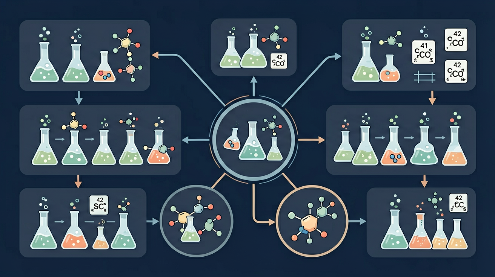

真实情境
药物中间体的合成路线优化
某制药厂需要合成抗过敏药物氯雷他定的关键中间体2-(4-氯苯基)丙酸。现有原料为甲苯和常见无机试剂，研发小组正在讨论如何通过最短路径合成该物质。已知丙二酸二乙酯合成法会产生大量废水，需要寻找更环保的路线。
已有经验
学生已掌握卤代烃取代、羧酸衍生物转化、傅克烷基化等反应
真正卡点
逆向合成分析中官能团转换顺序的合理性判断
本课任务
设计三步以内的合成路线并说明各步反应类型
怎样从目标产物倒推到可行原料，再正向写出合成路线？

先选一个你关心的问题。后面的例子、提示和 AI 学伴都会围绕这个问题来帮你推进。
选择或输入后，本课会围绕你的问题展开。
某制药厂需要合成抗过敏药物氯雷他定的关键中间体2-(4-氯苯基)丙酸。现有原料为甲苯和常见无机试剂，研发小组正在讨论如何通过最短路径合成该物质。已知丙二酸二乙酯合成法会产生大量废水，需要寻找更环保的路线。
学生已掌握卤代烃取代、羧酸衍生物转化、傅克烷基化等反应
逆向合成分析中官能团转换顺序的合理性判断
设计三步以内的合成路线并说明各步反应类型
有机合成是通过一系列反应把简单原料转化为目标产物。设计路线要考虑官能团的引入、转化与保护。常用“逆合成”思路：从目标倒推可能的前体与反应。每一步都要选合适反应类型与条件。
有机合成路线设计常用的分析思路是？
通过加成引入羟基/卤素，通过氧化把醇变醛、酸，通过酯化连接羧酸与醇。掌握转化网络才能规划路线。注意反应条件（催化剂、温度、溶剂）决定产物。常见链：烯烃→卤代烃/醇→醛→酸→酯。
乙醇经催化氧化再氧化，依次得到？
好的合成路线步骤少、产率高、原料易得、副产物少、环境友好。评价路线要综合考虑这些因素。绿色化学强调原子经济性与减少污染。对比多条路线时列出优缺点再选择。
评价有机合成路线优劣通常不考虑？
本课任务：用分子模型跟踪官能团变化，设计一条“乙烯→乙酸乙酯”的多步合成路线并标注每步反应类型与条件。
写清自变量、因变量和至少两个保持不变的条件，避免同时改变多个因素后无法归因。
至少记录三组带单位的数据或三个可复查的现象，不用“变大了”“更明显”代替证据。
用本课公式、粒子模型或受力关系解释趋势，并指出结论成立所依赖的模型条件。
换一个参数或真实情境预测结果，再用仿真检验；若不一致，回查变量、单位和边界条件。
设计乙酸乙酯合成路线时，直接前体通常是？
先识别目标产物的碳骨架和关键官能团，判断需要新增、移除或转化什么。
羧酸可由醇/醛氧化而来，酯可由羧酸和醇酯化而来。
好路线要考虑步骤少、产率高、条件可行、副反应少和原料易得。
有机合成常采用逆推法：由目标分子看官能团，一步步推到已知原料。常用转化：烯烃⇄卤代烃⇄醇⇄醛⇄羧酸⇄酯，以及芳环上的取代等。注意步数少、条件可行、产率与分离。
目标→切断官能团→找前体→直到原料。再正向写出各步试剂条件，检查每步是否有异构或副反应。
常见误区：常见误区是步数冗长或忽略中间产物分离纯化与条件可行性。
设计合成路线较稳妥的思路是？
记忆锚点：合成路线：目标先拆官能团，逆推找前体，正推查条件。
易错提醒：常见错误：只写目标反应不检查碳骨架是否守恒，或忽略反应条件导致路线不可行。
理解逆合成分析法在有机合成中的应用，掌握通过官能团转化设计合成路线的核心策略，培养证据推理与模型认知素养
以乙酰水杨酸（阿司匹林）合成为例：水杨酸（酚羟基）与乙酸酐发生酯化反应，需浓硫酸催化并控制60℃水浴，产率达68%
1.标出目标分子官能团 2.逆向推导前体结构 3.选择合适转化反应 4.验证每步可行性
混淆酯化与中和反应条件：学生常将羧酸与醇的酯化（需浓硫酸加热）误写为羧酸与碱的中和反应（常温即可）
课堂任务：请用“现象/文本/地图/实验数据 → 关键证据 → 学科解释 → 迁移应用”四步，重写一个关于「有机合成路线设计：从目标倒推反应路径」的新问题。
不要只看结论。动手改变变量后，再用一句话解释画面为什么变了。
识别并写出本节核心定义、公式或分类标准。
把本课标准用于一个实验数据或真实生活场景。
设计一个反例，说明常见错误为什么站不住脚。
如果你能解释“怎样从目标产物倒推到可行原料，再正向写出合成路线？”，这节课就真正过关了。